Philosophia Reformata - Johann Daniel Mylius
Philosophia Reformata - Johann Daniel Mylius
revu le 23 août 2004 Voici les gravures de la Philosophia Reformata
de Mylius. On distingue trois ensembles, l'un allant de 1 jusqu'à 28 ; une deuxième série, de 29 jusqu'à 48 ; enfin une troisième série qui inclut l'arbre philosophique (n°49) où Adolphus et Senior dialoguent jusqu'à la gravure n° 61. Si l'on se réfère à ce qu'en dit Jacques Van Lennep dans son Alchimie - et à John Ferguson, dans sa Bibliotheca Chemica, c'est en 1622 que la Philosophia Reformata parût. Toutefois, les thèmes abordés ne sont pas originaux : on verra dans le commentaire que nous donnons à ces gravures, que l'artiste s'est inspiré des Douze Clefs de Basile Valentin, des planches de l' Atalanta fugiens et de certaines des gravures du Rosarium Philosophorum
. Il paraît que le graveur est Balthazar Schwan, mais Van Lennep ne donne pas de précision directe touchant cette information. L'arbre alchimique de la figure 49 fait l'objet d'une section spéciale. mylius_1 mylius_2 mylius_3 mylius_4 mylius_5 mylius_6 mylius_7 mylius_8 mylius_9 mylius_10 mylius_11 mylius_12 mylius_13 mylius_14 mylius_15 mylius_16 mylius_17 mylius_18 mylius_19 mylius_20 mylius_21 mylius_22 mylius_23 mylius_24 mylius_25 mylius_26 mylius_27 mylius_28 mylius_29 mylius_30 mylius_31 mylius_32 mylius_33 mylius_34 mylius_35 mylius_36 mylius_37 mylius_38 mylius_39 mylius_40 mylius_41 mylius_42 mylius_43 mylius_44 mylius_45 mylius_46 mylius_47 mylius_48 mylius_49 mylius_50 mylius_51 mylius_52 mylius_53 mylius_54 mylius_55 mylius_56 mylius_57 mylius_58 mylius_59 mylius_60 mylius_61
Créé avec IrfanView (version Fr)
Illustrations (63)


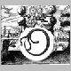
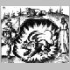
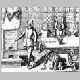
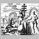
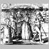
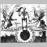
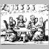
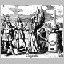
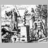
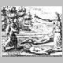
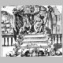
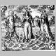
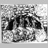
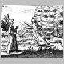
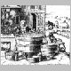
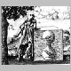
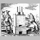
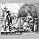
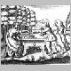
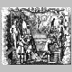
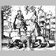
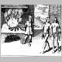
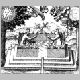
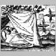
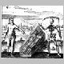
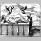
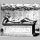
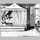
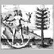
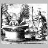
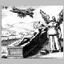
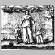
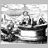
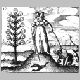
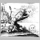
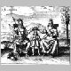
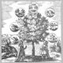
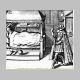
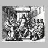
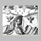
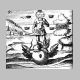
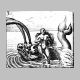
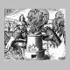
Noms cités
Atalanta · Valentin · Basile · Jacques · Bibliotheca · John · Rosarium · Lennep · Ferguson · Senior · Mylius · Adolphus